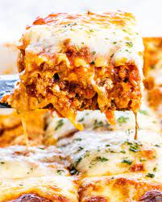

Lasagna

Description
Lasagna is the name of one of the oldest and best-known pasta shapes. It is usually rectangular or ribbon shaped, thicker than tagliatelle, made from a dough based on flour and eggs, with numerous local variants. After being boiled, the rectangular lasagna noodles are drained and placed in layers with a filling that varies based on different local traditions.
In other words, Lasagna is filling, relatively easy to assemble and make, highly adaptable and keeps well, making it an intriguing choice for restaurant chefs creating menus and home cooks alike.
Ingredients
- Lasagna noodles
- Ground beef or Italian sausage
- Onion
- Garlic
- Tomato sauce
- Ricotta cheese
- Mozzarella cheese
- Parmesan cheese
- Egg
- Italian seasoning
- Salt and pepper to taste
- Olive oil
Steps
- Boil a large pot of water. Add salt and cook the lasagna noodles until al dente. Drain and set aside.
- In a skillet, heat olive oil over medium heat. Add chopped onions and minced garlic. Sauté until onions are translucent.
- Add ground beef or Italian sausage to the skillet. Cook until browned and crumbled. Drain any excess fat.
- Stir in the tomato sauce and Italian seasoning. Simmer the sauce for about 15 minutes, allowing the flavors to meld. Season with salt and pepper to taste.
- In a separate bowl, combine the ricotta cheese, a beaten egg, and grated Parmesan cheese.
- Preheat your oven to the desired temperature (usually around 375°F or 190°C).
- In a baking dish, start assembling the lasagna: Begin with a layer of lasagna noodles, followed by a layer of the meat sauce, a layer of the ricotta cheese mixture, and a layer of mozzarella cheese. Repeat this layering process until you've used up all your ingredients.
- Finish with a final layer of noodles, meat sauce, and mozzarella cheese on top.
- Cover the baking dish with foil and bake in the preheated oven for about 30-35 minutes, or until the lasagna is hot and bubbly.
- Remove the foil and bake for an additional 10-15 minutes, or until the cheese is golden and bubbly.
- Remove from the oven and let it cool for a few minutes before serving. Enjoy your delicious homemade lasagna!